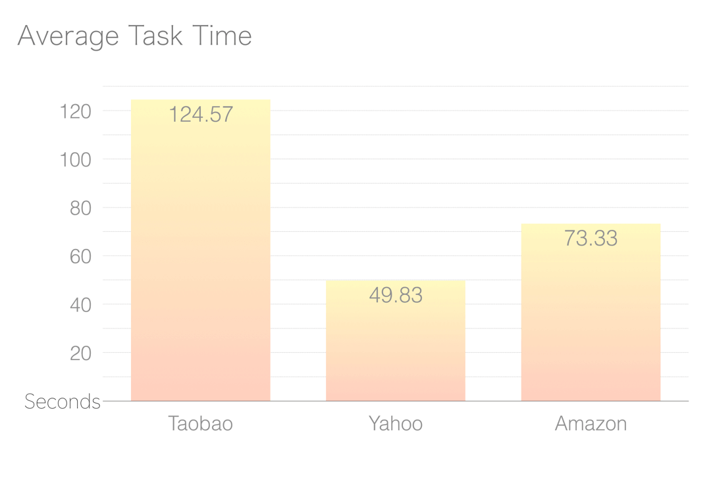
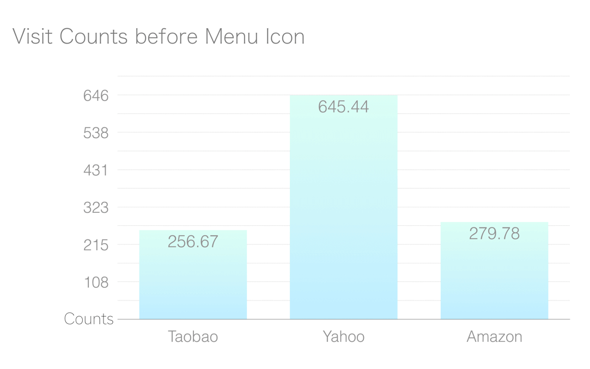
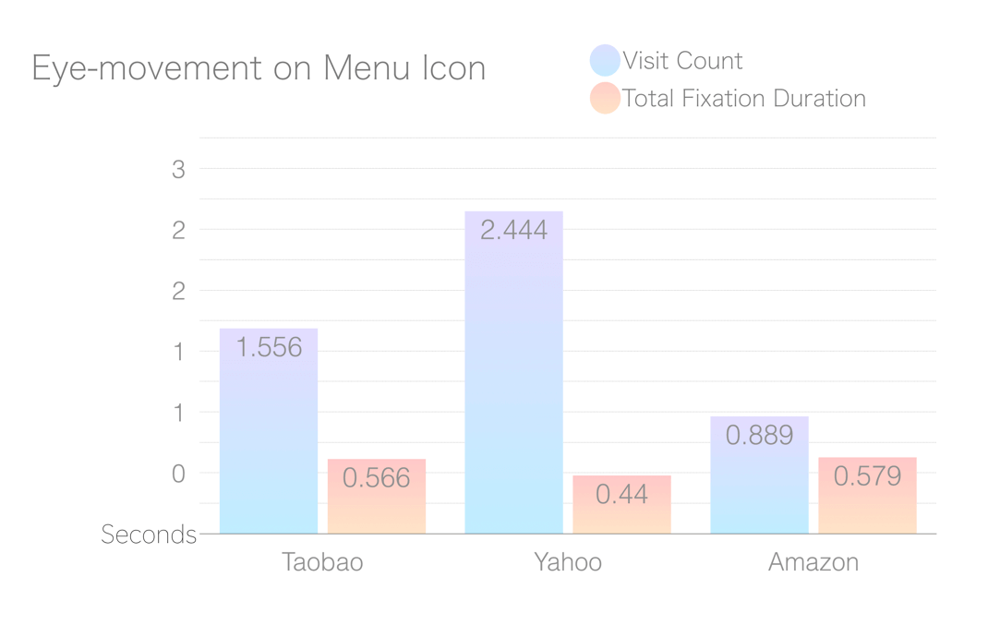

Usability Testing for Shopping Apps - Using Eye-tracking Method
Project Introduction
Different shopping apps have different interface styles. In this study, we use eye-tracking technique and interview to know more information about how people from different countries/cultures look at the interfaces and examine the information hierarchy. We investigated 9 of the most popular shopping apps used in Taiwan, China, and the U.S. We chose 3 out of 9 apps to represent shopping habits from 3 different areas. Results show that participants can find items on Yahoo Shopping Mall fastest; they also found Amazon’s home screen alignment was the easist to understand.
My Role UX researcher
Timeframe Mar. 2015 – May 2015
Team Size 3 people
ToolsTobii Pro Eye-tracker X2-60Survey
SkillsExperiment designInterviewQuantitative & qualitative data analysisUsability testing
The Problem
Once, I found out my Chinese classmates have very different online shopping habits from me. I started to wonder why China's mobile shopping apps interface and features are very different from Taiwan’s mobile shopping apps. Driven by curiosity, I cooperated with lots exchange students from China in the university and launch a mobile shopping app user study.
The Process
Menu Features
First, we started to categorize and analyze the components of the shopping apps.
The Apparatus
Tobii Pro X2-60
We used Tobii Pro X2-60 to collect data, and controlled the lab environment, demographics, novice vs experts.
The Mobile Device Stand
The Mobile Device Stand is used for testing on tablets and mobile phones using the Tobii Pro X2 or X3 eye trackers. Users can perform efficient, natural, and high-quality research into how subjects experience mobile websites and apps or how they consume ads on smaller screens. This accessory is suitable for both quantitative and qualitative studies that require detailed behavioral (Tobii Pro Mobile Device Stand brochure, 2017).
The Tasks
We assigned participants with different tasks based on Latin square to balance order effect.
Please go to Taobao shopping app, use menu icon and try to find the product“helmet”. You do not have to find products of specific brands. After finding any helmet, please raise your hand to let researchers know you’ve finished the task. If you cannot finish the task in 7 minutes, the researchers will terminate the trial.
Please go to Yahoo shopping app, use menu icon and try to find the product“yoga mat”. You do not have to find products of specific brands. After finding any helmet, please raise your hand to let researchers know you’ve finished the task. If you cannot finish the task in 7 minutes, the researchers will terminate the trial.
Please go to Amazon shopping app, use menu icon and try to find the product“tampon”. You do not have to find products of specific brands. After finding any helmet, please raise your hand to let researchers know you’ve finished the task. If you cannot finish the task in 7 minutes, the researchers will terminate the trial.
Eye-movement Indicators
4 different indicators were recorded to evaluate the usability, including:
- Fixations Before the Area of Interest
- First Fixation Duration in the Area of Interest
- Total Fixation Duration in Area of Interest
- Visit Count in Area of Interest
We also recorded particiants' behaviors, time for completing the tasks, and interview data.
Data Visualization
I got some data, I got an eye-tracker... Bang! I have scan paths and heat maps!
Alright, I'm sure the reference is already out of fashion. Don't judge me.
Scan Paths
Eye-movement paths on Amazon's home screen.
Eye-movement paths on Taobao's home screen.
Eye-movements path on Yahoo!'s main page.
Heat Map
Eye-movements heat map on Amazon's home screen.
Eye-movements heat map on Taobao's home screen.
Eye-movements heat map on Yahoo!'s home screen.
Statistics
Different using patterns affect participants' task finishing time.Because of cultural difference and the information hierarchy, users had a hard time finding products in Taobao.
Yahoo got the most fixations before finding menu iconThis diagram shows participants got distracted or attracted on Yahoo!'s main page, probably because the timeline design was very different from the other two apps.
Overall, Amazon's menu icon is the most efficientThe less participants spent time on fixation duration, the more efficiently the icons delivered its meaning. Yet users did not recognize Yahoo and Taobao's icons easily.
Get Insights
We also conducted retrospective think aloud, and recorded the interview data.
Some quotes from the interviewees
“Because on Taobao, the category named “wipes”, I thought it was wet wipes or something, after tapping into the icon I realized it was menstrual pads.”By Taiwanese participants No.5
“I tapped the 'all category' icon first, and looked for grocery. I tried to search it by 'personal cares' first, but couldn’t find it, in the end I found the product in “tissue”category.However I never thought that tampons and menstrual pads should be categorized in tissue products...”By Chinese participants No.9
Conclusion
Combining both qualitative and Psychophysiology quantitative data, we can get better understanding on mobile design!
Different wordings of the same products would make users confused and decrease the efficiency of searching for products.
For example, Chinese use the phrases “sanitized wipers” to refer to menstrual pads, and Taiwanese use “safety hats” to refer to helmets.
The poor information hierarchy could affect user’s judgment.
For example, one of the Taiwanese users cannot find helmets in Taobao, and he said whatever he tapped into, all the products just seemed irrelevant.
Icons and pictures are necessary when users are unfamiliar with the language used in apps.
For example, lots of Taiwanese cannot understand simplified Chinese, and they still finish the task in limited time because they reported they could rely on icons and products photos to search items.
Different shopping habits affect the meaning delivery of icons.
For example, one Chinese participant said using menu icon did not cohere with her own shopping habit, so she’s also confusing when asked to do so. But when using unfamiliar apps, good information hierarchy, and understandable categorization helped her to find products easily.
App developers need to consider the diversity of customers, and localize the wording, icon design, and information hierarchy as well.